| 縦断データの分析 |
| 縦断データの分析 |
初期値と変化率という問いから、増加、減少、転換点、移行、漸近線を考えることへと変わる。
TIME の変換
関数形式の仮定
変換された尺度でもパラメータの解釈は明瞭
多くの変数の測度はそもそも後づけなので、オリジナルで分析しようが変換して分析しようが問題は生じない
データの経験的プロットのでっぱりをみながら、
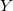 の次数を上げるか/下げるか
TIME の次数を下げるか/上げるか
探索的に決める。
平均値のプロットから判断するのではない
変換することで意味がわかりにくくなるのであれば、別の測度を変換する
TIME の2次、3次の項を含める。 例えば、
| 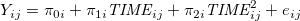 | (6.14) |
この場合、
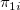 は変化率ではなく、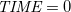 の瞬間的な変化率
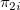 は曲率
となる。 時間による微分 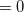 を解くことで、曲線の頂点は 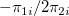 であることがわかる。
多項式では、各パラメータの解釈が難しくなる。
「平均の曲線」と「曲線の平均」が一致する
個人の軌跡と平均の軌跡が同じ関数になる1
パラメータに対して線形な個人の成長モデルは、動的一致性を満たす。
以下の曲線を直角双曲線と呼び、生物学的成長や農作物の成長をモデリングするのに用いられる。
| 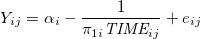 | (6.14) |
ここで、
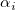 は上方漸近線
は漸近線に近づく割合（小さいほど速く近づく）
を表す。 ただし、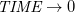 のとき、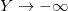 となることもあり、あまり用いられない。
次の式で表される曲線を、2次の逆多項式という（直角双曲線の拡張）。
| 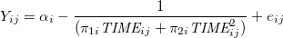 |
は上方漸近線に近づくのを抑える働きをしている（大きく負であれば、一度近づいた漸近線から下降してゆく）
生物学的、農学的、物理的成長のモデリングに最も広く使われている。
無限の栄養がある状態での細菌の増殖など、爆発的軌跡として知られている。 結果変数が対数変換されたものと見るとわかりやすい。
| 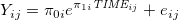 | (6.14) |
ここで、
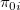 は切片に相当（値が大きいほどより高い位置から直線が始まる）
は傾きに相当（値が大きいほどより速く無限大に近づいてゆく）
である。
上方漸近線がある点で直角双曲線や2次の逆多項式に形状は似ているが、 で 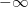 にならない。 農作物の収穫量、感染症の患者数など一定を超えると横ばいになるようなもの。
| 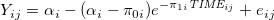 |
ここで、
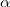 は上方漸近線
は切片に相当（値が大きいほどより高い位置から直線が始まる）
は傾きに相当（値が大きいほどより速く漸近線に近づいてゆく）
である。
下方漸近線と上方漸近線があり、生物学でよく使われる。
| 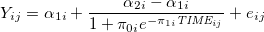 |
ここで、
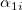 は下方漸近線
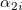 は上方漸近線
は切片に相当（値が大きいほどより高い位置から直線が始まる）
は傾きに相当（値が大きいほどより速く漸近線に近づいてゆく）
である。
はてな？
例では、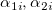 を課題の条件から定め、 と にレベル2の予測変数を含んだ線形モデル（誤差は2変量正規分布する）を仮定している。
この、レベル2のモデル自体は、非線形にできないのだろうか？あるいは、そのようなことが必要になる文脈はないのだろうか？
はてな？ここまで
学習が進む割合は、
すでに生じた学習の量
まだ生じていない学習の量
に比例する。
すなわち、 を 時点  で学習した量、 を学習可能な量の上限、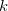 を比例定数とすると、
で学習した量、 を学習可能な量の上限、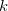 を比例定数とすると、
| 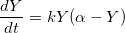 |
と表せる。
ここから、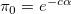、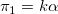 とおくと、この微分方程式は、
| 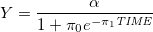 |
と解け、ロジスティック関数となる。
これをデータに当てはめるため、添え字 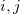 をつけ、さらに誤差項を加えることで、
| 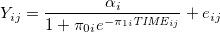 |
とモデル化すれば良い。
はてな？
誤差項は、単に足すだけで良いのか？
はてな？ここまで
仮に人間が保持できる記憶の量は常に一定であるとすると、時間 における記憶量 の変化は、
| 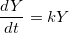 |
と表せる。
メモ
すでに記憶した量によって、今記憶できる速さは左右されるということ。（最初はたくさん記憶できても、記憶した量がたくさんになってくるとそれ以上記憶できなくなってくる。）
メモここまで
これをデータに当てはめるため、微分方程式を解いた上で添え字 をつけ、さらに誤差項を加えることで、
| 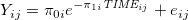 |
とモデル化すれば良い。 丸暗記のモデルとしてよく用いられる。
学習された反応がどう想起されるのかをもとに、負の指数型の軌跡
| 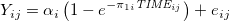 |
を仮定した。
獲得 が練習（それまでの時間）に依存しうるというモデルを作り、ネズミの迷路課題学習に適用した。
| 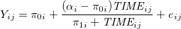 |
Footnotes
| 縦断データの分析 |